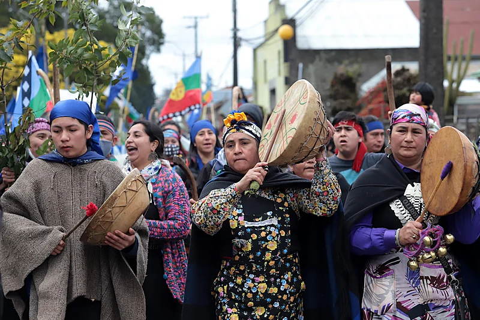

O Chile é um país localizado no sudoeste da América do Sul, caracterizado por sua longa e estreita extensão territorial entre a Cordilheira dos Andes e o Oceano Pacífico. Conhecido por sua diversidade geográfica e cultural, o Chile abriga o deserto mais seco do mundo, o Atacama, além de florestas, geleiras e praias. Sua capital, Santiago, é o centro econômico e político do país.
Frase em espanhol:
"¡Bienvenidos a Chile, el país de paisajes infinitos y cultura vibrante!"
(Tradução: "Bem-vindos ao Chile, o país de paisagens infinitas e cultura vibrante!")
A cultura chilena é uma fusão de tradições indígenas e influências europeias, principalmente espanholas. Danças folclóricas como a cueca são populares, assim como as festividades tradicionais, como a Fiesta de la Tirana. A gastronomia destaca pratos como o asado, empanadas chilenas e o curanto, além de vinhos mundialmente famosos produzidos no Vale do Colchagua. O Chile também é o berço de grandes poetas como Pablo Neruda e Gabriela Mistral, ambos vencedores do Prêmio Nobel de Literatura.

O Chile possui uma rica história que remonta aos povos indígenas como os Mapuches, que habitavam a região antes da colonização espanhola no século XVI. Após anos de colonização, o país conquistou sua independência em 1818 sob a liderança de Bernardo O'Higgins e José de San Martín. Durante o século XX, o Chile enfrentou momentos marcantes, como o governo de Salvador Allende e a ditadura militar de Augusto Pinochet, que durou de 1973 a 1990. Hoje, é uma nação democrática com grande relevância na América Latina.
O Chile é uma república democrática desde 1990, após o fim da ditadura militar. A Constituição de 1980, revisada ao longo dos anos, é o documento que rege o país. Recentemente, em 2022, o Chile vivenciou um processo de rediscussão constitucional, refletindo o desejo de modernização e inclusão social. O sistema político é presidencialista, e o presidente é o chefe de Estado e governo. O país tem uma forte tradição de estabilidade democrática na região.
| População | Área | Idioma |
|---|---|---|
| 19 milhões | 756.096 km² | Espanhol |
| Capital: Santiago | Mapuche | |
| Moeda | Peso Chileno | |